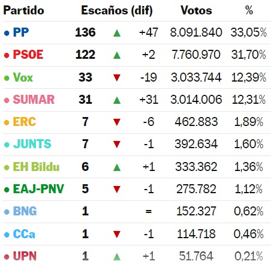

Con todo el voto presencial y por correo escrutado, ningún partido o posible coalición ha obtenido los escaños suficientes en el Congreso de los Diputados para adjudicarse la victoria. Tanto el PSOE, el partido socialdemócrata del presidente Pedro Sánchez, como sus oponentes conservadores del PP, no lograron obtener los 176 escaños que requerían para alcanzar la mayoría, incluso al sumar a los partidos con los que podrían aliarse. Aún no se escrutan los votos de los ciudadanos que viven en el exterior y eso podría modificar el resultado en algunos escaños muy disputados. Se contarán a finales de julio. El resultado incierto podría conducir a semanas de negociación entre los partidos o incluso a otra votación posterior este año. Vox, un partido de ultraderecha antiinmigración que se esperaba formara coalición con el PP, perdió 19 escaños, por lo que no logró la oportunidad de entregar los votos requeridos para integrar un bloque de derecha. Sumar, una coalición progresista que se espera que apoye al PSOE, acabó en cuarto lugar. Su líder, la vicepresidenta y ministra de Trabajo Yolanda Díaz, logró un impulso gracias a una destacada actuación en el debate en los últimos días de la campaña, cuando desafió las políticas antifeministas del líder de Vox, Santiago Abascal. Tanto los bloques liberales como conservadores deberán obtener el apoyo de los partidos regionales pequeños para alcanzar una mayoría. El PP y Vox necesitarán el voto de PNV, un partido nacionalista vasco que apoyó al gobierno liderado por Sánchez en 2019 y que probablemente no apoye una coalición de derecha. También van a necesitar del apoyo de dos partidos menores, cada uno con un escaño, Coalición Canaria (CC), un partido nacionalista de las islas Canarias que hace poco formó un gobierno regional con el voto del PP, y Unión del Pueblo Navarro, (UPN), un aliado histórico del PP en Navarra. PSOE y Sumar tendrán que refrendar el apoyo de los partidos que votaron por Sánchez en 2019 y deberán buscar el respaldo de Junts, un partido nacionalista catalán. Míriam Nogueras, candidata de Junts en Barcelona, dijo que no apoyarán a Sánchez “a cambio de nada” y que su prioridad es Cataluña, no “la gobernabilidad del Estado”.
| ESTADISTICAS DE PARTIDOS POLITICOS MAS VOTADOS (MODIFICACION EJERCICIO) | |
|  | Con todo el voto presencial y por correo escrutado, ningún partido o posible coalición ha obtenido los escaños suficientes en el Congreso de los Diputados para adjudicarse la victoria. Tanto el PSOE, el partido socialdemócrata del presidente Pedro Sánchez, como sus oponentes conservadores del PP, no lograron obtener los 176 escaños que requerían para alcanzar la mayoría, incluso al sumar a los partidos con los que podrían aliarse. Aún no se escrutan los votos de los ciudadanos que viven en el exterior y eso podría modificar el resultado en algunos escaños muy disputados. Se contarán a finales de julio. El resultado incierto podría conducir a semanas de negociación entre los partidos o incluso a otra votación posterior este año. Vox, un partido de ultraderecha antiinmigración que se esperaba formara coalición con el PP, perdió 19 escaños, por lo que no logró la oportunidad de entregar los votos requeridos para integrar un bloque de derecha. Sumar, una coalición progresista que se espera que apoye al PSOE, acabó en cuarto lugar. Su líder, la vicepresidenta y ministra de Trabajo Yolanda Díaz, logró un impulso gracias a una destacada actuación en el debate en los últimos días de la campaña, cuando desafió las políticas antifeministas del líder de Vox, Santiago Abascal. Tanto los bloques liberales como conservadores deberán obtener el apoyo de los partidos regionales pequeños para alcanzar una mayoría. El PP y Vox necesitarán el voto de PNV, un partido nacionalista vasco que apoyó al gobierno liderado por Sánchez en 2019 y que probablemente no apoye una coalición de derecha. También van a necesitar del apoyo de dos partidos menores, cada uno con un escaño, Coalición Canaria (CC), un partido nacionalista de las islas Canarias que hace poco formó un gobierno regional con el voto del PP, y Unión del Pueblo Navarro, (UPN), un aliado histórico del PP en Navarra. PSOE y Sumar tendrán que refrendar el apoyo de los partidos que votaron por Sánchez en 2019 y deberán buscar el respaldo de Junts, un partido nacionalista catalán. Míriam Nogueras, candidata de Junts en Barcelona, dijo que no apoyarán a Sánchez “a cambio de nada” y que su prioridad es Cataluña, no “la gobernabilidad del Estado”. |
|---|---|
| Con todo el voto presencial y por correo escrutado, ningún partido o posible coalición ha obtenido los escaños suficientes en el Congreso de los Diputados para adjudicarse la victoria. Tanto el PSOE, el partido socialdemócrata del presidente Pedro Sánchez, como sus oponentes conservadores del PP, no lograron obtener los 176 escaños que requerían para alcanzar la mayoría, incluso al sumar a los partidos con los que podrían aliarse. Aún no se escrutan los votos de los ciudadanos que viven en el exterior y eso podría modificar el resultado en algunos escaños muy disputados. Se contarán a finales de julio. El resultado incierto podría conducir a semanas de negociación entre los partidos o incluso a otra votación posterior este año. Vox, un partido de ultraderecha antiinmigración que se esperaba formara coalición con el PP, perdió 19 escaños, por lo que no logró la oportunidad de entregar los votos requeridos para integrar un bloque de derecha. Sumar, una coalición progresista que se espera que apoye al PSOE, acabó en cuarto lugar. | |